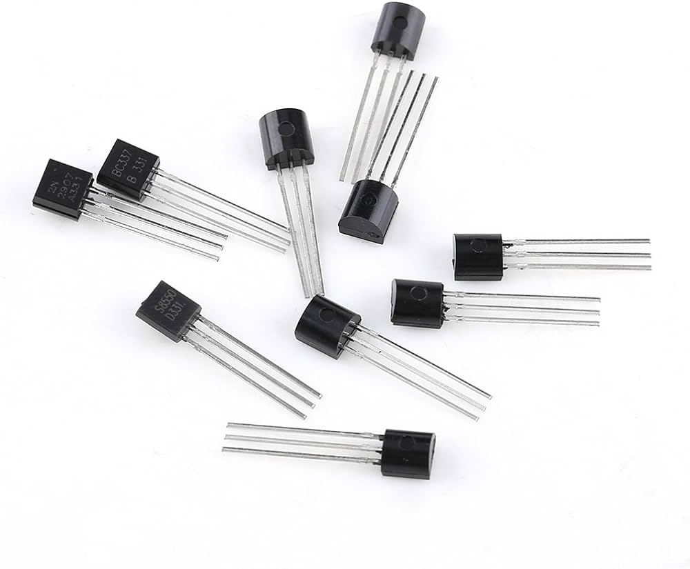
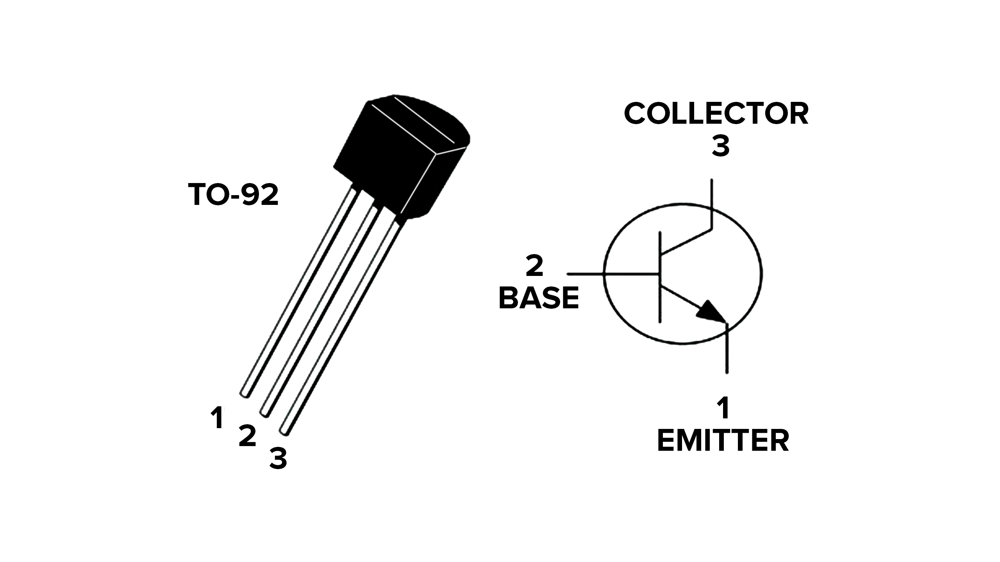
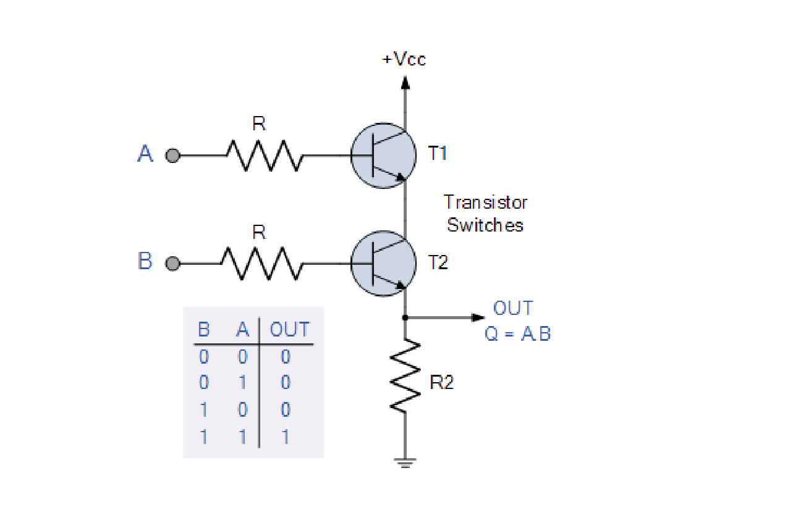
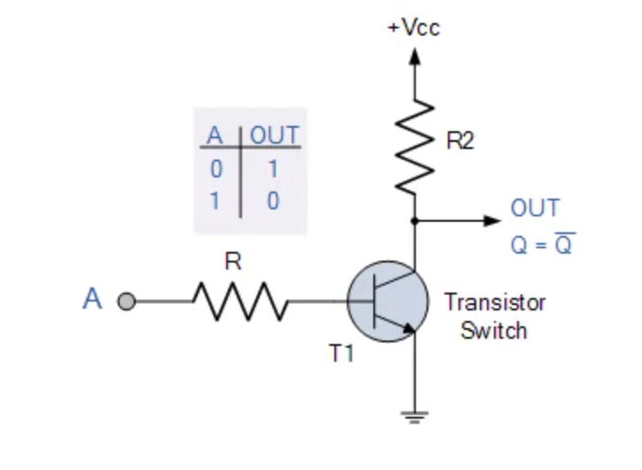
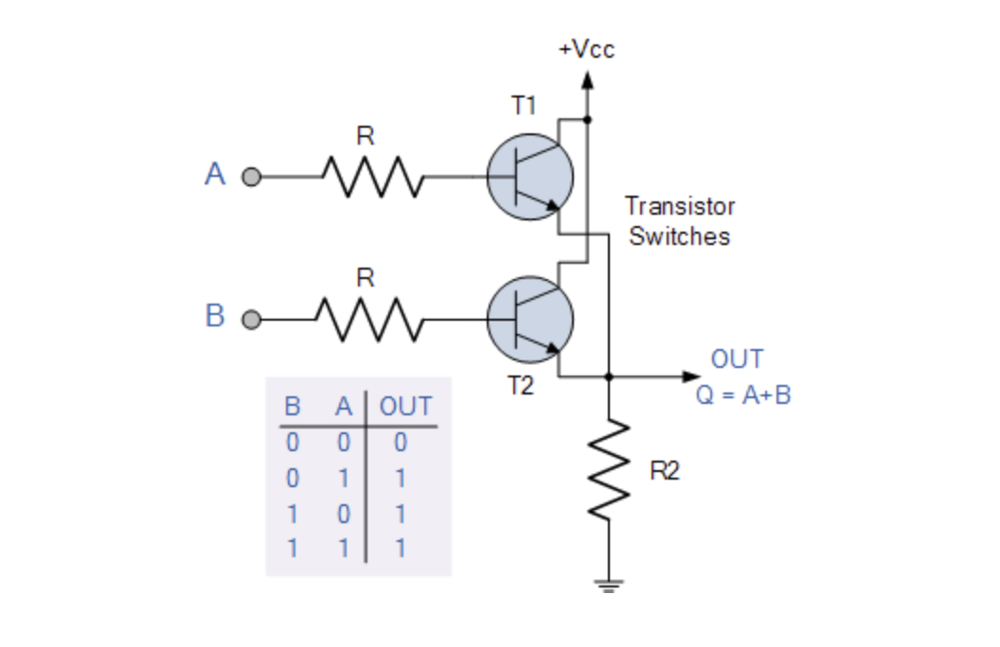
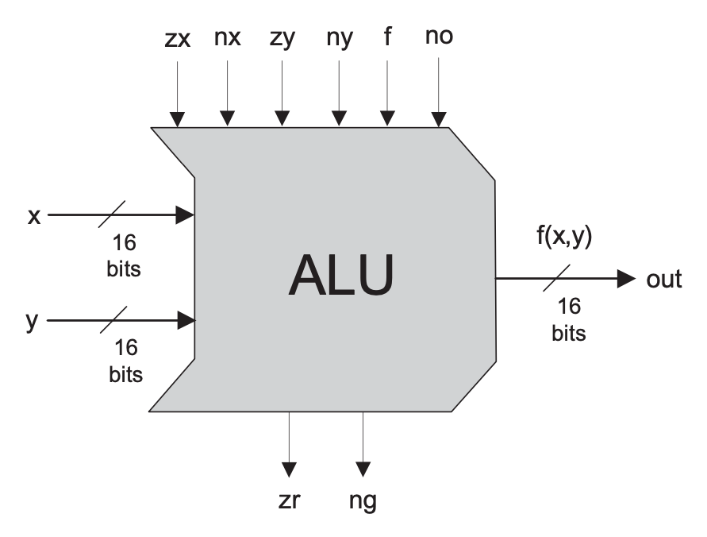
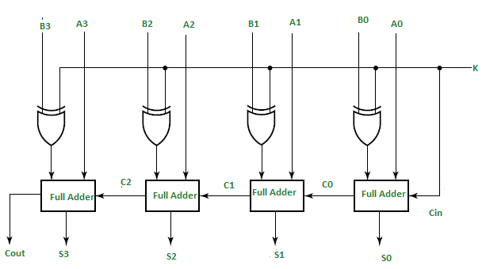

Overview
A computer is an electronic device that processes data according to a set of instructions, known as programs. It can perform a wide range of tasks, from simple arithmetic operations to complex simulations and data analysis. The fundamental components of a computer include hardware and software. Hardware refers to the physical components such as the central processing unit (CPU), memory, and input/output devices. Software comprises the programs and operating systems that control the hardware and enable the computer to perform specific tasks.
Computers operate on binary logic, using a series of electrical signals represented as ones (1) and zeros (0). This binary system is the foundation of all computing processes, enabling the execution of complex algorithms and operations that power modern technology.The evolution of computers can be traced back to ancient mechanical devices, progressing through various technological advancements that have shaped modern computing.
MECHANICAL COMPUTERS

One of the earliest forms of mechanical computation was the abacus, used for arithmetic calculations. In the 17th century, Blaise Pascal developed the Pascaline, a mechanical calculator capable of performing addition and subtraction. Later, in the 19th century, Charles Babbage designed the Analytical Engine, a conceptual mechanical computer that could be programmed using punched cards. Although never fully built, the Analytical Engine laid the groundwork for modern computer design.
RELAY COMPUTERS

The early 20th century saw the advent of electromechanical computers using relays, which are switches operated by electrical currents. One notable example is the Zuse Z3, developed by Konrad Zuse in 1941. The Z3 was the world's first programmable computer, using relays to perform arithmetic operations and data storage.
Constructed using 2000 relays, it featured a 22-bit word length and operated at a clock frequency of approximately 5–10 Hz. Program code and data for the Z3 were stored on punched film. This pioneering machine was completed in Berlin in 1941.
VACUUM TUBES

The introduction of vacuum tubes marked a significant leap in computing technology. Vacuum tubes could amplify electrical signals and switch them on and off, functioning as electronic switches. The ENIAC (Electronic Numerical Integrator and Computer), completed in 1945, was the first general-purpose electronic computer. It used approximately 18,000 vacuum tubes and could perform complex calculations at unprecedented speeds. However, vacuum tubes were bulky, consumed a lot of power, and were prone to failure.
TRANSISTORS

The invention of the transistor in 1947 by John Bardeen, Walter Brattain, and William Shockley at Bell Labs revolutionized the field of electronics and computing. Transistors are semiconductor devices that can amplify and switch electronic signals. They are smaller, more reliable, and more energy-efficient than vacuum tubes.
Transistors enabled the development of smaller, faster, and more powerful computers. The IBM 1401, introduced in 1959, was one of the first computers to use transistors, offering improved performance and reliability over its vacuum tube predecessors. The integration of transistors into circuits led to the creation of integrated circuits (ICs), where multiple transistors and other components are fabricated onto a single silicon chip.
TRANSISTORS

A transistor is a semiconductor device used to amplify or switch electronic signals and electrical power. It is composed of semiconductor material, typically silicon, that can conduct electricity under certain conditions. Transistors are fundamental building blocks in modern electronic devices and are used in a wide range of applications, from amplifiers to switches, and in complex circuits like processors.
Key Functions of a Transistor:
Switching: Transistors can act as electronic switches, turning a current on or off.
TRANSISTOR AS A SWITCH

One of the most fundamental applications of a transistor is using it to control the flow of power to another part of the circuit -- using it as an electric switch. Driving it in either cutoff or saturation mode, the transistor can create the binary on/off effect of a switch.When the voltage at the base is greater than 0.6V (or whatever your transistor's Vth might be), the transistor starts saturating and looks like a short circuit between collector and emitter. When the voltage at the base is less than 0.6V the transistor is in cutoff mode -- no current flows because it looks like an open circuit between C and E.
LOGIC GATES
Since transistors function as switches, we can utilize them to construct logic gates, as logic gates are essentially switches arranged in a specific configuration. By controlling the flow of current through a series of transistors, we can create fundamental logic gates such as AND, OR, and NOT gates, which are the building blocks of digital circuits. These logic gates can be combined to form more complex circuits, enabling the execution of a wide range of computational tasks. Thus, the versatility and switching capabilities of transistors make them ideal for creating the intricate networks of logic gates that power modern electronics and computing devices..
AND GATE

NOT GATE

OR GATE

ALU

An Arithmetic Logic Unit (ALU) is a crucial component of a computer's central processing unit (CPU) responsible for executing arithmetic operations like addition, subtraction, multiplication, and division, as well as logical operations such as AND, OR, NOT, and XOR. It operates on binary inputs (operands) and produces outputs along with status flags that indicate specific conditions like zero result, negative result, overflow, or carry out. The ALU works closely with the CPU's control unit and registers to process instructions from programs, making it fundamental to the computer's ability to perform calculations and execute complex algorithms efficiently, thus playing a vital role in determining the computer's overall processing power and speed.
MOST FUNDAMENTAL FUNCTION
Addition and subtraction are the most fundamental operations in an ALU because they serve as the basis for many other arithmetic and logical operations. Multiplication can be performed as repeated addition, and division as repeated subtraction, while comparison operations can use subtraction to determine relative values. Logical shifts and rotations often involve addition and subtraction combined with bitwise operations. These operations are simpler and faster to implement in hardware, making them crucial for the overall performance of the CPU. Furthermore, many algorithms and data processing tasks rely on these basic operations, underpinning more complex computations and logical functions in digital systems..
ADDER- SUBTRACTOR

An ALU can essentially be reduced to an adder-subtractor circuit because addition and subtraction are the core operations from which many other arithmetic and logical functions can be derived. By configuring an adder to also perform subtraction through methods like two's complement.
We can achieve an ALU that performs both addition and subtraction using full adders and XOR gates by leveraging the properties of binary arithmetic. In an adder-subtractor circuit, full adders are used to sum the input bits along with any carry from the previous stage. To perform subtraction, we utilize the concept of two's complement, which involves inverting the bits of the number to be subtracted and adding one. This can be efficiently done using XOR gates, which invert each bit of the second operand when a control signal (indicating subtraction) is active. The XOR gates effectively toggle between passing the original bits (for addition) and their complements (for subtraction). The resulting bits are then fed into the full adders along with the addition of a 1 to the least significant bit position to complete the two's complement operation. This configuration allows the ALU to perform both addition and subtraction seamlessly by simply adjusting the control signal, making it a versatile and fundamental component of digital arithmetic.
PROJECT IMAGE
IMAGE 1

IMAGE 2

IMAGE 3